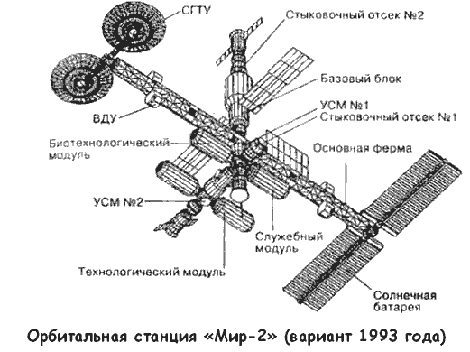
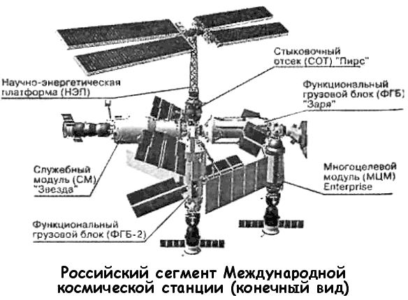

Орбитальная станция «Мир-2»
«23 марта 2001 года российская космическая станция «Мир» прекратила свое существование.
Примерно в 8 часов 45 минут по московскому времени она вошла в плотные слои атмосферы, где начала гореть и разламываться на куски. Обломки станции упали в северозападной части расчетного района затопления станции в южной части Тихого океана».
Разные люди по-разному воспринимают эти сухие строчки сообщения ПРАЙМ-ТАСС. Одни удовлетворены тем, что снята непомерная обуза для российского бюджета; высвободившиеся деньги можно направить в социальный сектор.
Другие, наоборот, переживают гибель станции «Мир», словно смерть ближайшего родственника, и говорят о том, что с потерей единственной национальной орбитальной станции Россия утратила статус космической державы. И те и другие — максималисты, их позиции находятся на противоположных краях спектра, истина же, как ей и положено, находится посередине.
Разумеется, станцию «Мир» следовало затопить.
Во-первых, это была очень старая станция (базовый блок запущен на орбиту 20 февраля 1986 года) и она выработала свой ресурс (расчетный срок эксплуатации — 8 лет).

Последние экспедиции на станцию сопровождались чередой аварий, некоторые из которых могли привести к гибели экипажа. Продолжать эксплуатацию «Мира» можно было бы только после серьезного капитального ремонта станции, затраты на который сопоставимы с ее стоимостью.
Во-вторых, не следует забывать, что введение в строй и обслуживание российского сегмента Международной космической станции «МКС» обходится нашей стране в круглую сумму, которая черпается из той же части государственного бюджета, что и все другие космические программы.
Куда более богатые страны (Британия, Германия, Япония) не могут позволить себе иметь отдельную орбитальную станцию — мы же претендовали сразу на две!
С другой стороны, отказ от перспективных космических программ действительно может поставить крест на будущем России. В эпоху высоких технологий побеждает тот, кто сумел сохранить и преумножить научно-технологический задел XX века. Околоземное пространство (включая Луну) становится объектом промышленной эксплуатации, и тот, кто сегодня сумеет закрепиться на этом рубеже, будет процветать завтра. И все же стоит помнить: бюджет не резиновый! В современной ситуации (и вряд ли она изменится в ближайшие двадцать-тридцать лет) у России есть только одна альтернатива: или продолжать участие в развитии «МКС», или строить станцию «Мир-2».
Скорее всего, руководство страны выберет первое, хотя вторую возможность тоже исключать нельзя. Тем более что различные проекты орбитальной станции «Мир-2» обсуждаются еще с советских времен.
Концепция орбитальной станции «Мир-2» как станции третьего поколения впервые была сформулирована в 1976 году.
Базовым блоком, как и в предыдущем случае, должна была служить станция «ДОС» (условно — № 8).
Первоначально станция «ДОС-8» («Заря») создавалась в качестве дубликата станции «Мир-1», который мог бы заменить основную станцию в случае гибели последней. Базовый блок «Мира-2» был закончен в феврале 1985 года, а главное оборудование было смонтировано к октябрю 1986 года.

Со временем станция выросла. 14 декабря 1987 года ее проект утвердил директор НПО «Энергия» Юрий Семенов, а в январе 1988 года в советской прессе проектируемая станция впервые получила имя «Мир-2».
Долгоживущая орбитальная станция «Мир-2» должна была состоять из следующих блоков: базовый блок «Заря» (запуск ракетой «Протон-К»), 90-тонный орбитальный док (запуск ракетой «Энергия»), фермы и панели солнечных батарей (запуск ракетой «Протон-К»), служебный, биотехнологический, первый исследовательский, второй исследовательский и технологический модули.
Орбитальный монтаж станции, как ожидалось, должен был начаться не позже 1993 года. В дело, однако, вмешалась политика. Отказ советского руководства от планов создания военных баз в околоземном пространстве привел к тому, что в 1989 работы над блоком «Заря» и остальными модулями были приостановлены.
В 1991 году руководство НПО «Энергия» выдвинуло проект облегченной станции «Мир-2», которая заменила базовый блок «Мира-1». Другие модули также со временем можно было заменить на новые с помощью орбитального корабля «Буран». Полный монтаж станции «Мир-2» в этом случае мог быть закончен к 2000 году.
Невзирая на сложную экономическую и политическую ситуацию в стране, Совет главных конструкторов, собравшийся 24 ноября 1992 года, вновь пересмотрел проект «Мира2», вернувшись к первоначальному варианту строительства совершенно новой станции.
В то же самое время руководство НПО «Энергия» понимало, что Россия не сможет профинансировать этот проект в полном объеме. Поэтому 15 марта 1993 года генеральный директор Юрий Коптев и генеральный конструктор НПО «Энергия» Юрий Семенов обратились к директору НАСА Голдину с предложением о создании Международной космической станции. А уже 2 сентября 1993 года Председатель Правительства Российской Федерации Виктор Черномырдин и вице-президент США Альберт Гор подписали «Совместное заявление о сотрудничестве в космосе», предусматривающее в том числе создание международной станции на основе задела по станциям «Мир-2» и «Фридом».
В российский сегмент «МКС» вошли практически все (за исключением военных) модули, разработанные для станции «Мир»: базовый (функционально-грузовой) блок «Заря», служебный блок «Звезда», корабль «Прогресс М-45», корабль «Союз ТМ», корабль «Прогресс М» и ряд других узлов и блоков, имеющих специальное назначение.
«Мир-2» живет в составе Международной космической станции, но легче ли от этого тем, кто продолжает считать, что с потерей первого «Мира» мы потеряли уважение всего остального мира?.. Прошу прощения за невольный каламбур.